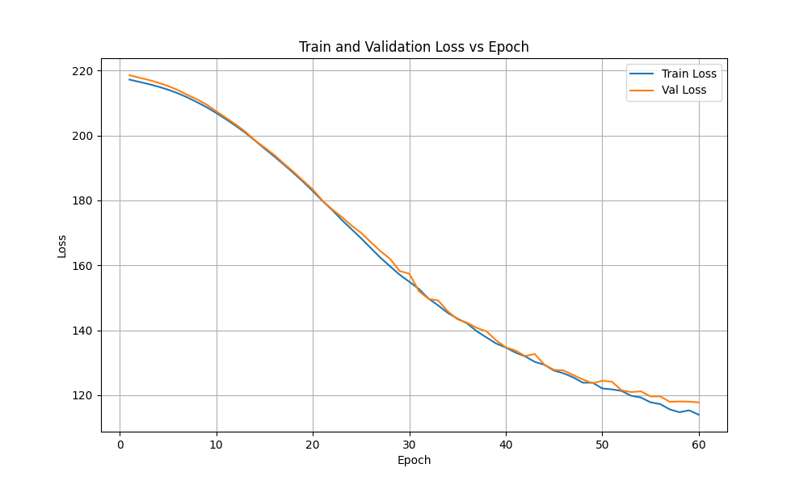
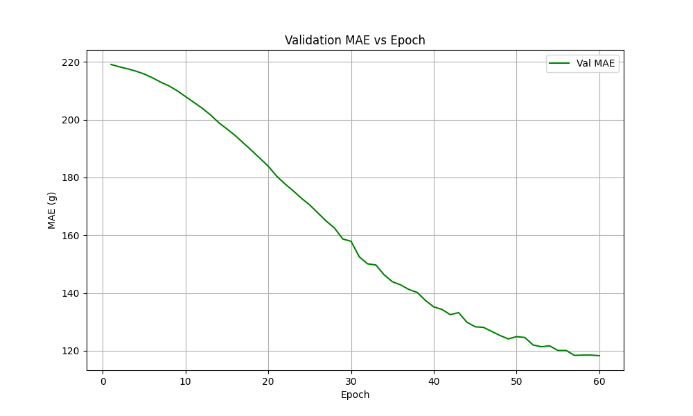
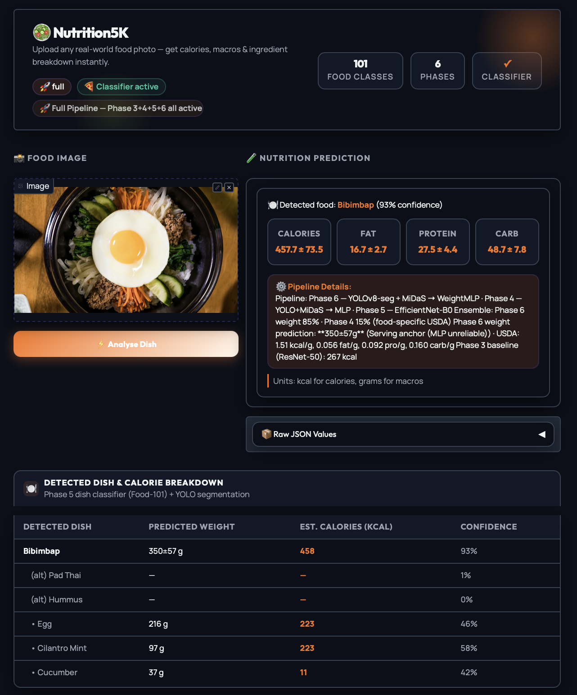
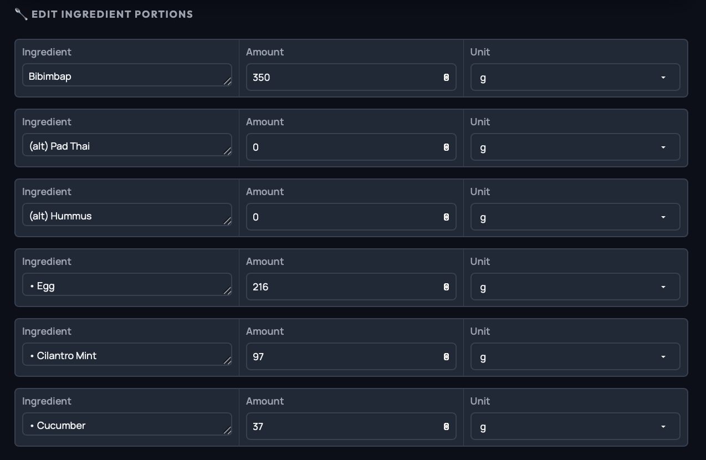

Food Nutrition Estimation from a Single RGB Image
Depth-aware geometric learning with direct and weight-first nutrient prediction for practical meal analysis.
Problem and Goal
Visual appearance alone is a weak proxy for mass and nutrition. Similar-looking dishes can have very different density and calorie content, so the core research question is whether geometry-aware features can improve meal nutrition estimation from one RGB image.
Main Contributions
- Depth-aware 9D geometric descriptor from YOLOv8 segmentation and MiDaS depth.
- Two nutrient paths: direct nutrient regression and weight-first conversion.
- Dish classification prior (EfficientNet-B0) with optional USDA density lookup.
- MC Dropout uncertainty reporting integrated into the user interface.
- Editable Gradio workflow for human-in-the-loop correction.
Data and Protocol
Targets: calories, fat, protein, carbohydrate.
Evaluation split: 2597 train / 324 val / 326 test (fixed across comparisons).
Primary metrics: MAE and RMSE (MAPE used only as secondary signal).
Phased Development
- Phase 3: ResNet-50 direct baseline.
- Phase 4: Geometry-based MLP nutrient regression.
- Phase 5: EfficientNet-B0 Food-101 classification.
- Phase 6: Weight-first MLP then macro conversion.
Uncertainty and Deployment
Inference uses MC Dropout with repeated stochastic forward passes. The app reports mean prediction and confidence intervals, and propagates weight uncertainty to nutrient uncertainty in the weight-first path.
Direct path: $\hat{\mathbf{n}} = f_\theta(g)$
Weight-first path: $\hat{w} = h_\phi(g),\; \hat{n}_j = \hat{w}\rho_j$
Uncertainty: $\mu = \frac{1}{T}\sum_t \hat{y}^{(t)}$, $\sigma^2 = \frac{1}{T-1}\sum_t(\hat{y}^{(t)}-\mu)^2$
Integrated Pipeline
Inference merges direct nutrient prediction, weight-first conversion, and dish-class priors into one editable interface. The classifier predicts likely dish identity, the geometric encoder estimates portion cues, and the final app merges these signals with USDA constants or fallback priors.
Prediction target: $\mathbf{y}=[\text{calories},\text{fat},\text{protein},\text{carb}]$
Why geometry helps: the model uses mask area and depth summaries instead of relying on RGB appearance alone.
This is the main design choice that improves portion estimation and explains the Phase 4 gain over the Phase 3 RGB baseline.
Model Components
| Stage | Model | Output |
|---|---|---|
| Segmentation | YOLOv8n-seg | Food mask(s) |
| Depth | MiDaS small | Relative depth map |
| Direct path | NutritionMLP | Calories, fat, protein, carb |
| Weight-first | WeightMLP | Weight then nutrient conversion |
| Classification | EfficientNet-B0 | Top-k dish probabilities |
Training Evidence
The epoch curves show both train and validation loss/MAE dropping smoothly, supporting the claim that the model converged without obvious instability or divergence.


Quantitative Results
Calorie MAE Comparison
Phase 4 MAE/RMSE (test)
| Target | MAE | RMSE |
|---|---|---|
| Calories | 119.79 | 158.69 |
| Fat | 7.67 | 10.66 |
| Protein | 11.01 | 15.75 |
| Carb | 11.14 | 14.35 |
Classification and Demo
Phase 5 EfficientNet-B0: top-1 85.86%, top-5 97.03%, best epoch 23.
Phase 6 derived MAE: calories 133.8, fat 8.1, protein 11.9, carb 10.9.
What the demo shows: upload an image, get the predicted dish and nutrient table, inspect the editable ingredient panel, and read the weight prediction details that explain the geometry-driven estimate.


Extract 9D geometric features from YOLO mask + MiDaS depth.
Predict weight with WeightMLP and sample MC-Dropout passes.
Estimate uncertainty from sample mean $\mu$ and variance $\sigma^2$.
Convert grams to calories/macros with dish-specific constants $\rho_j$.
Example geometric features (normalized)
Weight-first output
Predicted weight: 47 g
Selected serving anchor: 350 g
MC interval: $\mu \pm 2\sigma$
Nutrition conversion:
$\hat{n}_j = \hat{w}\rho_j$
Final report combines dish prior + conversion constants + confidence interval.
Error Patterns
- Mixed dishes with overlapping components.
- Strong occlusion or unusual camera viewpoints.
- Foods with similar geometry but different density.